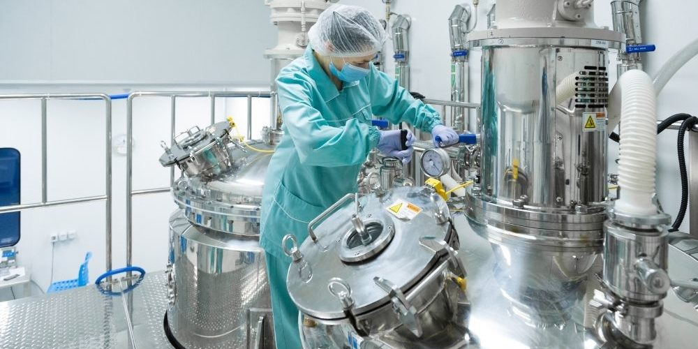
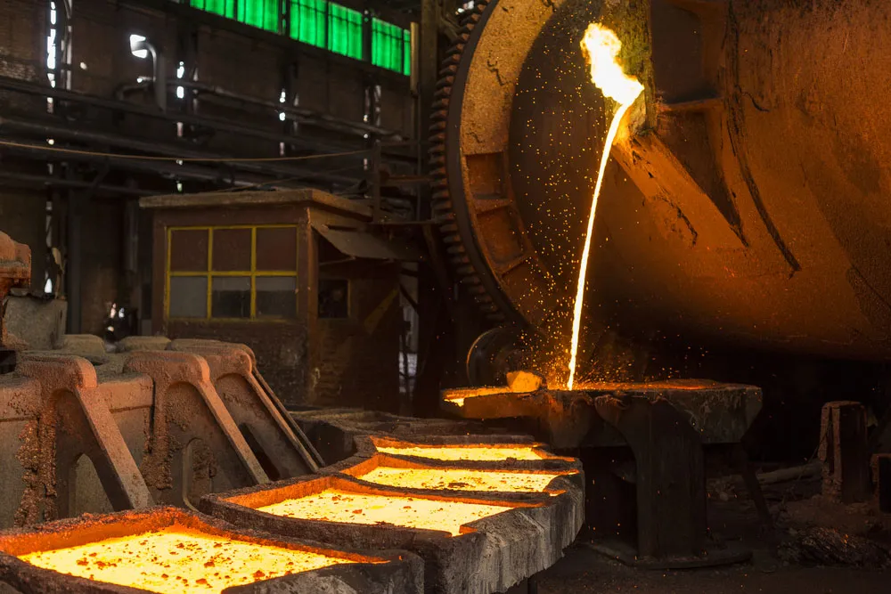
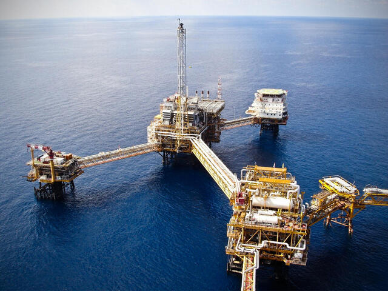
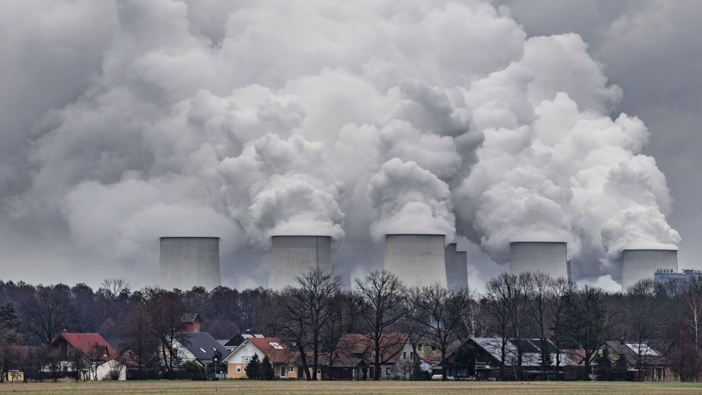
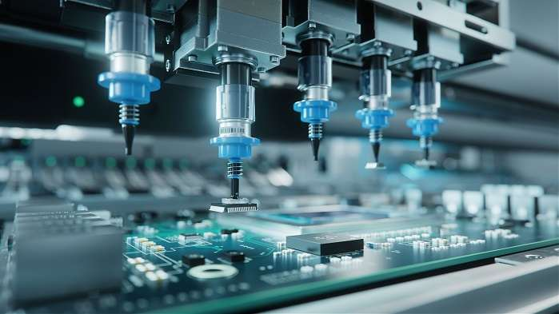

What are some industrial processes that can generate toxic waste?
Industrial processes can generate toxic waste in many different ways. Here are some examples:
Chemical manufacturing:
Chemical manufacturing is one of the most common sources of toxic waste. It involves the production of a wide range of chemicals, including acids, solvents, and other hazardous materials. The waste generated from these processes can be highly toxic and corrosive. For example, the production of pesticides and herbicides can produce toxic waste that contains chemicals such as chlorinated hydrocarbons and organophosphates.
Metal processing:
Metal processing can generate waste containing heavy metals such as lead, mercury, and cadmium. This waste can be highly toxic and can cause serious health problems if not handled properly. Metal processing can include activities such as smelting, refining, and electroplating. The waste generated from these processes can also be highly corrosive, which can make it difficult to handle and transport.
Oil and gas drilling:
The process of drilling for oil and gas can generate toxic waste in several ways. For example, drilling muds can contain hazardous materials such as benzene and lead. Hydraulic fracturing, or "fracking," can also generate toxic waste in the form of flowback water and produced water, which can contain high levels of salts, heavy metals, and radioactive materials.
Coal-fired power plants:
Coal-fired power plants generate waste containing heavy metals and other pollutants, including sulfur dioxide and nitrogen oxides. The waste can be highly toxic and can cause serious health problems if not handled properly. Coal-fired power plants also generate large amounts of ash and other solid waste, which can be difficult to dispose of safely.
Electronics manufacturing:
Electronics manufacturing can generate toxic waste in the form of heavy metals, such as lead, cadmium, and mercury. These metals are used in the production of electronics components, such as batteries and printed circuit boards. The waste generated from electronics manufacturing can also contain hazardous chemicals, such as flame retardants and solvents.
Overall, industrial processes can generate a wide variety of toxic waste, and it is essential to handle and dispose of this waste safely to protect human health and the environment.